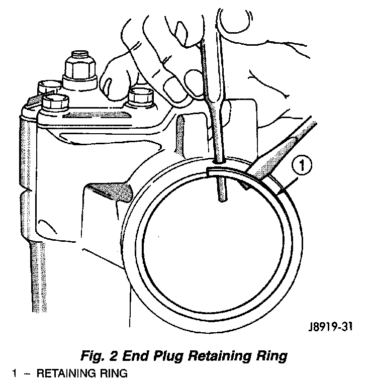
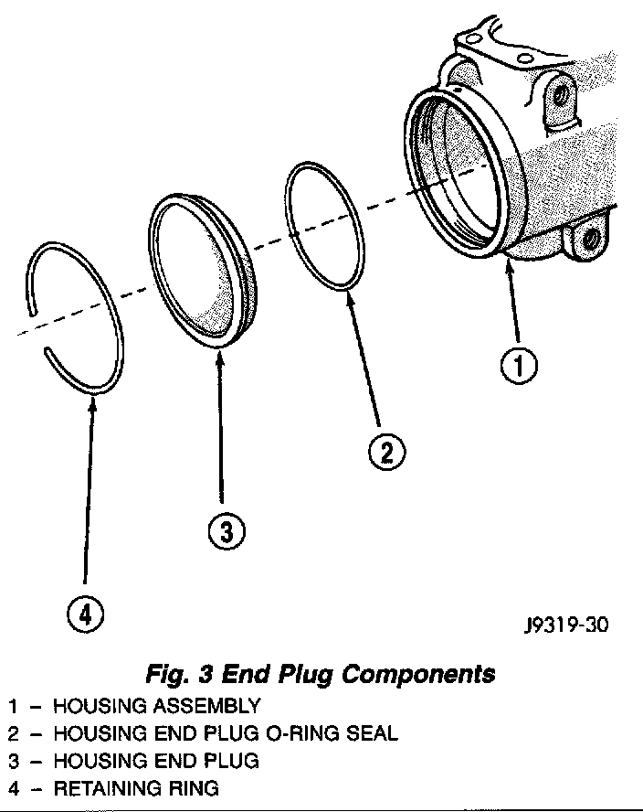
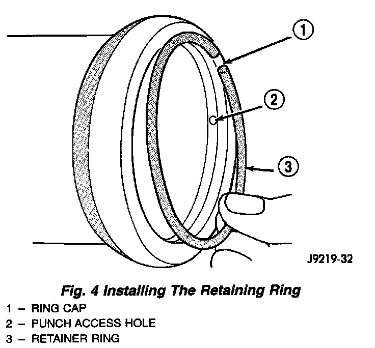

Housing End Plug
NOTE: Steering gear must be removed from the vehicle for this procedure.Fig. 2:

REMOVAL
1. Rotate retaining ring until one end is under the hole in the housing. Unseat and force ring from groove.
2. Rotate stub shaft slowly COUNTER-CLOCKWISE to remove end plug out from housing.
CAUTION: Do not turn stub shaft any further than necessary. The recirculating balls will drop out of the rack piston circuit and fall inside the rack piston chamber.
Fig. 3:

3. Remove O-ring seal.
INSTALLATION
1. Lubricate O-ring seal with power steering fluid.
2. Install O-ring into housing.
3. Install plug, tap lightly with a plastic mallet to seat it.
Fig. 4:

4. Install retaining ring with open end 25 mm (1 inch) from access hole.
5. Adjust pitman arm shaft, refer to Over-Center Adjustment.